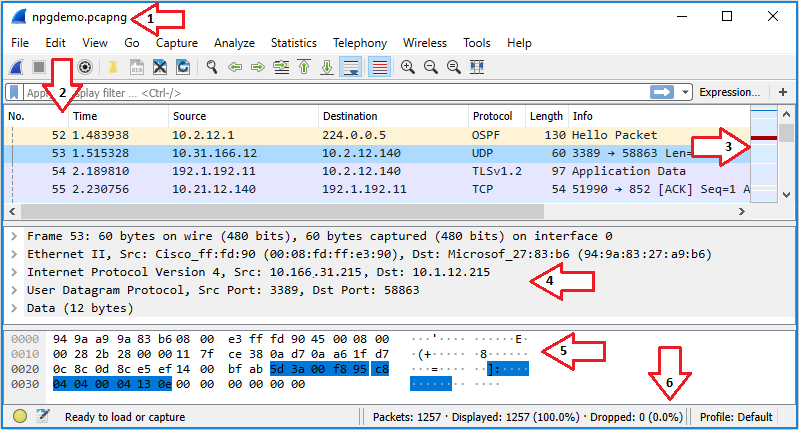

Sniffing tools
- Also known as • sniffer • packet analyzer • protocol analyzer • network analyzer
- 💡 Not only used for hacking but also for troubleshooting by e.g. system administrators
Cain and Abel
- Also known as Cain & Abel or Cain
- 📝 Recovery of various kind of passwords by sniffing the network
- 📝 Can also do
- ARP poisoning
- sniffing
- recording VoIP conversations
- password cracking with e.g. dictionary attacks, brute-force etc.
- See also • Cain and Abel | Wireless threats and attacks • Cain and Abel | Web server threats and attacks • ARP poisoning attack steps | ARP poisoning
libpcap
- 📝 Layer 2 Packet capture library for Linux/macOS
- See Turning on promiscuous mode for Windows alternatives
- 📝 Used by most sniffers including • Wireshark • Snort • tcpdump • TCPflow • Cain and Abel • Kismet • Nmap
- Maintained and developed by tcpdump
TCPflow
- Open-source TCP/IP packet demultiplexer.
- Stores data in a way that makes it convenient for debugging and analysis
- Like tcpdump however, separate files for each direction are created, making things easier to read.
- Uses
libpcap
tcpdump
- 📝 Command-line tool to show all TCP traffic from all interfaces live.
- Built-in for all Unix systems, has a Windows clone called WinDump
- Developed and maintains
libpcap - See
man page | tcpdump.org
Wireshark
- 📝 Also known as Ethereal (old name)
- 📝 Captures and visualize traffic.
- 📝 tshark: Terminal-based Wireshark like tcpdump
- Can be started from Window managers or command line
Turning on promiscuous mode
- Allows capturing all traffic, see Promiscuous mode | Sniffing
- On Linux/macOS it's done through
libpcap - 📝 On Windows a driver is required:
npcap: Driver from Nmap developersWinPcap: Discontinued driver- AirPcap: Obsolete, propriety USB dongle used when there was no open-source Windows driver
Wireshark non-root installation
- Running wireshark as root is not safest
- You're receiving traffic from an unknown location
- If anything goes wrong, people can gain root access
- Install wireshark by e.g.
apt-get install wireshark-gtk(varies by OS) usermod -a -G wireshark <user-name>to install it as non-root user- Adds wireshark to user account.
📝 Wireshark UI

- Title Bar
- Shows the name of the interface you're capturing until you save your capture
- Then it shows the name of the capture dump
- Packet List Pane
- You can add/remove/reorder columns
- Selecting a packet will show more details in the Packet Details Pane and Packet Bytes Pane
- Intelligent Scrollbar
- Mini-map of packets
- Depends on the height of the list and your physical display's specifications.
- Packet Details Pane
- Displays protocol fields
- Generated Fields
- Enclosed in brackets ([ ])
- Contains info such as TCP analysis, response time, checksum validation, and IP geolocation.
- Links
- Wireshark will generate a link if it detects relationships between packets.
- Formatted blue with an underline.
- Double-clicking on the link will jump you to the related packet.
- Packet Bytes Pane
- Hexdump style with each line displaying the data offset
- 16 hexadecimal bytes, and 16 ASCII bytes
- The Statusbar
- Informational messages
Wireshark filtering
- ❗ Capture filters (like
tcp port 80) are not to be confused with display filters (liketcp.port == 80)
Display filters
- Control which packets are displayed
- Uses search and match operators such as
containsandmatches - E.g.
http contains hello: TCP packets containing string "hello" - Uses search comparisons
- Such as
- Equal:
eq|== - Not equal:
ne|!= - Greater than:
gt|> - Less than:
lt|< - Greater than or equal to:
ge|>= - Less than or equal to:
le|<=
- Equal:
- 📝 E.g.
tcp.port eq 21 or ssh: show only FTP (port 21) or SSH traffic.ip.addr == 192.168.1.1: examine all traffic from and to192.168.1.1s
Capture filters
- Also known as PCAP filters
- Same syntax as tcpdump or any other application using
libpcap - Much more limited than display filters
- Reduce the size of a raw packet capture, set before capturing
- E.g.
- Only from traffic to / from specific host:
host 172.18.5.4 - Only from a range of IP addresses:
src net 192.168.0.0/24
Kismet
- Kismet is an open-source wireless network and device detector, passive network sniffer, wardriving tool, and WIDS (Wireless Intrusion Detection system) framework.
- Can export in a compatible format for
- cracking with aircrack-ng for deep packet analysis with a tool like Wireshark / tshark.
- Kismet can discover wireless networks that are not sending beacon frames.
- Even if the security admin turns beaconing off (so no one can supposedly search for the SSIDs)
Kismet vs Wireshark
- Both looks at the contents of the packets and decodes them but presents them differently
- Wireshark is packet oriented: digs into specifics of each packet
- Kismet is device oriented: more device details, association with client.
- Both are passive-monitoring tools i.e. works without sending any loggable packets.
- Kismet is Wi-Fi only while Wireshark can also sniff on wired networks.
Mobile tools
- Wi.cap. Network Sniffer Pro for Android
- FaceNiff for Android (rooted only)
- PacketCapture for android